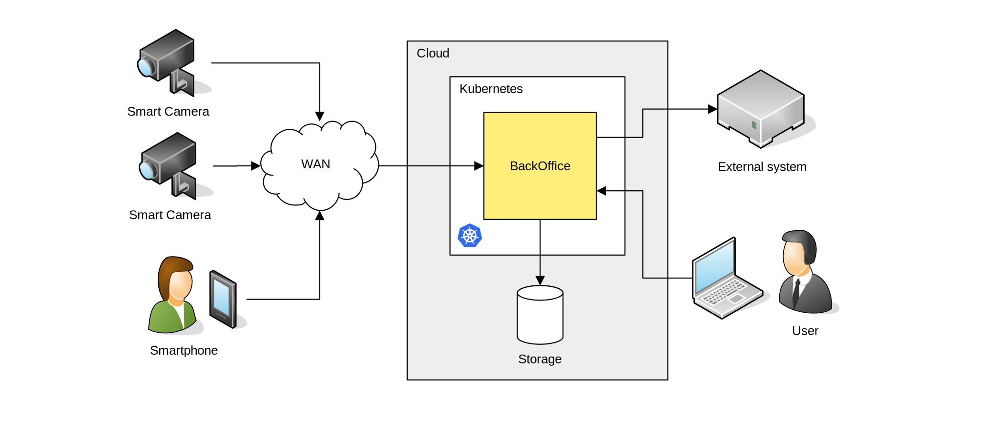

3. Design¶
The system can operate in various configurations, in which the key processing element - video stream analysis - is implemented in different locations. The user can choose the most convenient configuration from those described in the following sections.
3.1. Cloud computing¶

In such a configuration, cameras are mounted at the point of detection (on the road) to provide a video stream to the central system. These cameras are adapted for vehicle detection and identification (type: ANPR camera), however, since they do not analyze video, they must be connected to the central system with a relatively good and wide communication link – with a bandwidth of several Mbps.
The video stream is fed to a cloud-based application NeuroCar Stream VI – a separate instance of the stream engine is launched for each camera, which analyzes the stream and forwards (to BackOffice) only information about detected vehicles (VehicleTrace data record). The measurement data can only be accessed via BackOffice; either through the corresponding GUI application or by sending out notifications.
Thanks to the use of Kubernetes technology, such a solution can be run in virtually any cloud (either in a private → on premise, or with a third-party cloud provider). In addition, scaling is very easy – increasing the number of cameras is implemented only by adding working nodes in the cluster.
3.2. Fog computing¶

In such a configuration, cameras delivering the video stream are mounted at the point of detection (on the road), and computing units - Terminals - perform processing of the video stream “on the spot”. The terminal is equipped with an industrial CPU computing computer of sufficient power, a local storage medium (e.g. SSD) allowing data buffering, and communication devices (e.g. modem) allowing communication with the central system. The terminal can also collect other data such as environmental information such as temperature, power voltage, etc. The CPU computer, network equipment and power supply system are placed in a telecommunications cabinet mounted near the detection site. The camera signal is fed to the cabinet via a digital connection (UTP cable, fiber optic).
Fog processing allows a significant reduction in the size of the data that is sent over the WAN. The terminal sends only selected information about detected vehicles and status data to the BackOffice system. The system configured in this way is immune to disturbances in the data transmission network - a break in transmission does not cause loss of vehicle information. Buffered data can wait for delivery to the headquarters even many days.
An additional advantage of local processing is the ability to efficiently fuse data from multiple sensors, such as processing the stream from multiple cameras and detection from the induction loop controller. In this situation, it is the Terminal that is responsible for properly merging sensor data and forming a measurement record representing a single vehicle.
An important feature of fog processing is the ability of the user to work directly on the terminal, without the intermediation of the central system. Through this, the user on access to data immediately - without the potential delay generated by data transmission connections. To work with the terminal, the user must use an additional computer and a WEB browser.
All data generated by multiple terminals ultimately goes to the BackOffice central system. From this system, the user (or an external system) has access to the complete set of data, both current and archive.
3.3. Edge computing¶
In such a configuration, smart cameras are mounted at the point of detection (on the road), equipped with a motorized lens and a built-in infrared illuminator, provided with a built-in single-chip computer that processes the video stream. In addition, the smart camera has a built-in data storage device (SSD drive) for buffering measurements, and a modem - all in one compact enclosure.
The smart camera functionally corresponds to the terminal configuration, but it is more compact and smaller, and therefore easier to install, deploy and maintain. The disadvantage of a smart camera is the very limited possibility of creating multi-sensor measurement systems, which means that it is most often used when the user only needs the functionality of identifying vehicles “from a single shot”. The advantage of a smart camera is the ability to process images without distortion (e.g., without compression) which is due to the fact that the camera’s built-in CPU is physically integrated into the video path.
Another device that implements the instant processing concept is a smartphone that is both a camera and a processing unit. Such a phone, like a smart camera, analyzes the video stream, detects vehicles, identifies them and sends the result immediately to the central system.
3.4. Hybrid computing¶
In such a configuration, cloud computing, local computing and smart cameras can be used within a single system. The user receives at his disposal – from the central system – a unified, complete set of measurement data from all devices.